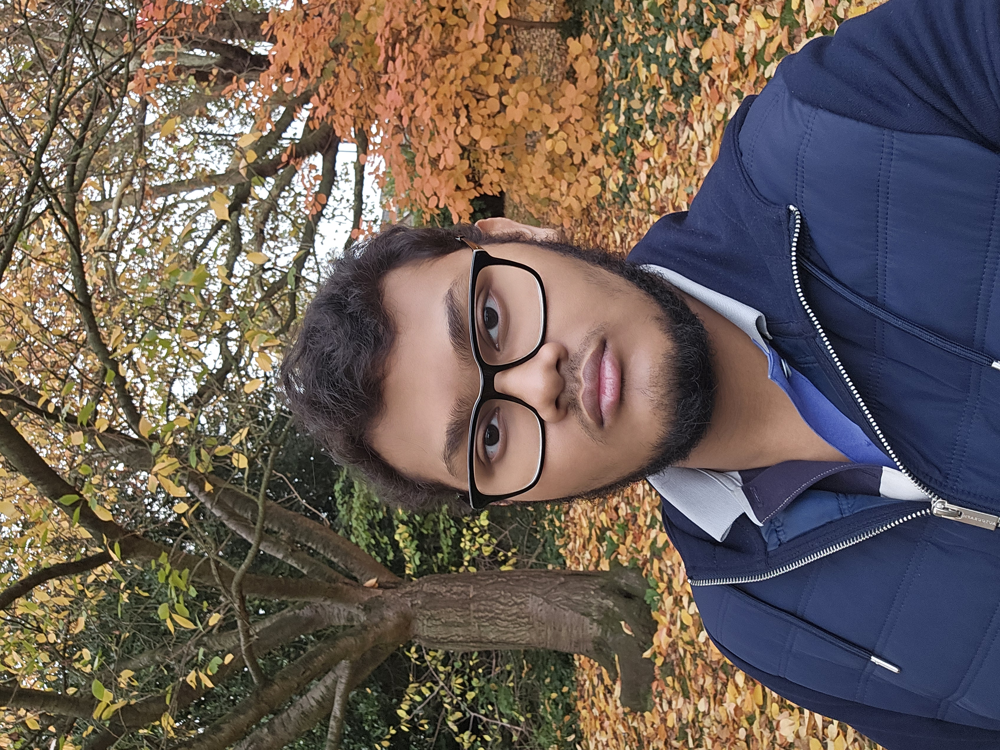

Who am I?
My name is AKM Abrar Islam. I am a second-year Computer Science student at Queen Mary University of London with interests in Linux, systems software, embedded/firmware engineering and hardware debugging.
My Hobbies
What I like doing:
- Linux customization
- Working on open source projects
- Watching Anime and playing video games
Basic Information
Name: AKM Abrar Islam